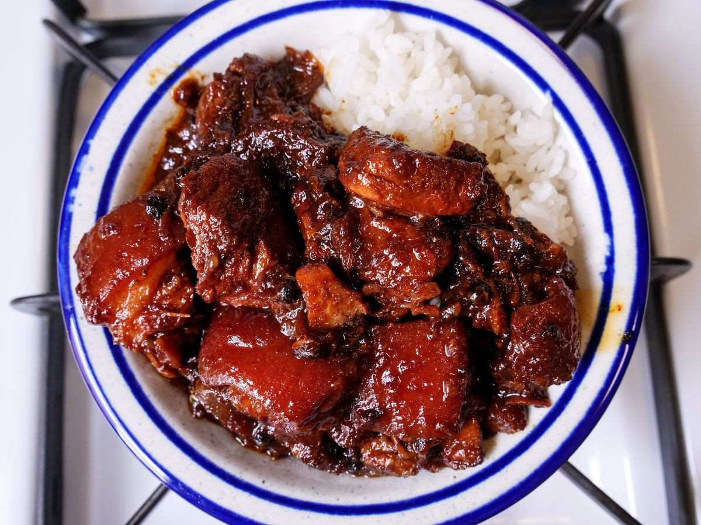

Pork Adobo Recipe

Description
This is a recipe post for Filipino Pork Adobo. It is a dish composed of pork slices cooked in soy sauce,
vinegar, and garlic. There are version wherein onions are also added. Adobo is a popular dish in the Philippines,
along with Sinigang.
Ingredients
Base
- 2lbs pork belly
- 2 tbsp garlic
- 5 dried bay leaves
- 4 tbsp vinegar
- 1/2 cup soy sauce
- 1 tbsp peppercorn
- 2 cups water
- Salt to taste
Steps
- Combine pork belly, soy sauce, and garlic. Let marinate for at least 1 hour.
- Heat the pot and put in the marinated pork belly, then cook for ~4-5 minutes.
- Pour remaining marinade into pot including garlic.
- Add water, whole peppercorn, and dried bay leaves then bring to boil. Simmer for ~40 minutes to an hour.
- Put in the vinegar and simmer for 12-15 minutes.
- Add salt to taste, and serve hot. Congrats, you have pork adobo for dinner!